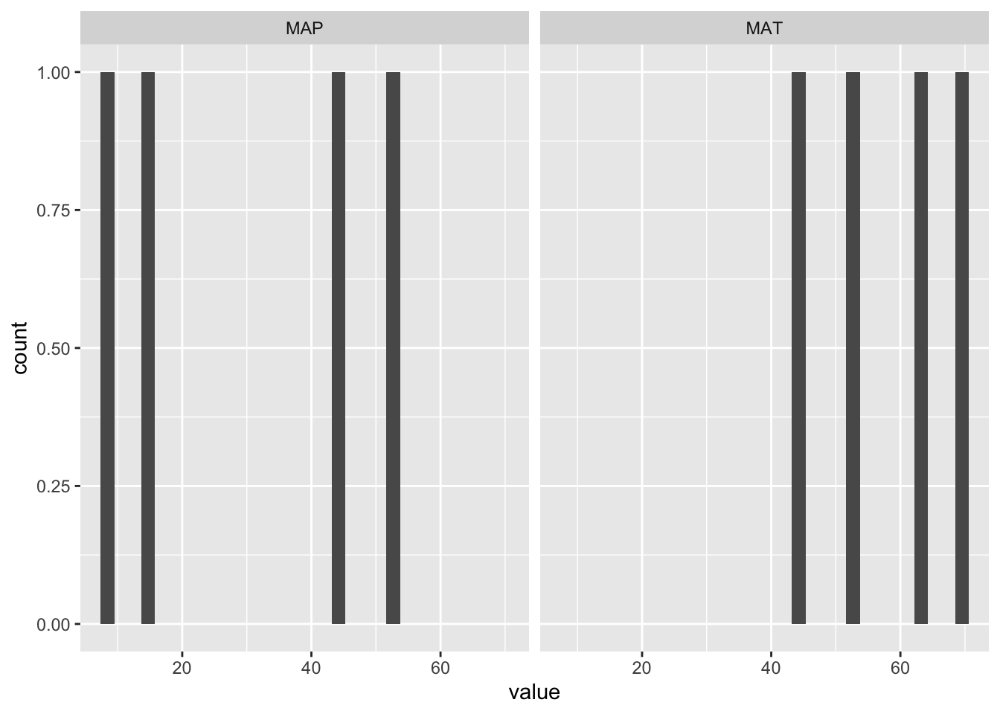

6 Visualization
Part of the tidyverse is the package ggplot2 which has so improved plots in R that we aren’t even going to talk about the basic ploting functions and will skip straight to using this package.
In ggplot you start with creating a plot object associated with a specific data set.
climateData <- tibble::tribble(~site, ~MAT , ~MAP ,
'Gainesville, FL' , 68.7 , 52.0,
'Lewiston, ME' , 45.1 , 44.9,
'Richland, WA' , 52.9 , 7.6,
'Irvine, CA', 63.5 , 14.4) %>%
pivot_longer(cols=c('MAT', 'MAP'))
ggplot(data = climateData)
This creates an empty plot. You then need to add different geometries that are mapped using asthetics to the data you used to create the object. In this case we are creating a histogram.
## `stat_bin()` using `bins = 30`. Pick better value with `binwidth`.But for our data that histogram spans two different measurements MAT and MAP. So we can wrap that in a facet to create subplots.
## `stat_bin()` using `bins = 30`. Pick better value with `binwidth`.
We can also do scatter plots
6.1 Regular expressions
There is a running joke in data science that all data is text data, so all problems are regular expressions. There is another joke that if you try to use regular expressions to solve a problem, you now have two problems.
Regular expressions are extremely useful and challenging to use, but the core concept is you have a pattern you want to find in a block of text. Simple right?
Regular expressions have evolved to a certain standard that is, generally, true across all programming languages, which means that what you learn here you can take with you to Python, Perl, or VBA. Each of those languages, however do have their own twist and excentricities they put on the patterns. We’ll talk about the general conventions first, then go over what R does differently, before finally covering the specific functions you can use to get started.
In general, a regular experession will tell you 1) what character, 2) how many times, and 3) where. Let’s start with the what.
6.1.0.1 What characters
Most characters you will work with fall loosly into four categories: digits, letters, white space, and special characters. Regular expression has special sort cuts for most of these:
| what | character match | regexp standard |
|---|---|---|
| digits | [0-9] | \d |
| letters (plus numbers and underscore) | [A-Za-z0-9_] | \w |
| white space (including tabs) | [ \t] | \s |
Special characters can be matched using the \ followed by the specific character.
You can also use the [ ] to match to a set of characters and the ‘-’ notates all the interviening sequential characters. For example: ‘[acb]’ will match to either ‘a’ or ‘c’ or ‘b’. Also ‘[a-c]’ will match ‘a’ or ‘b’ or ‘c’.
Note that the period ‘.’ is a wild card and will match any character. You can also use the ^ within the [ ] to say ‘not’ some character as prefix notation.
6.1.0.2 How many times
Next you need to say how many times you match that character. If you leave this unspecified it will match once and only once.
| how many | post-fix notation |
|---|---|
| * | zero or more times |
| + | one or more times |
| ? | zero or one times |
This is used as a post-fix notation, you say what character set you are matching first then you say how many times you are matching it. For example: ‘c?at’ will match both ‘cat’ and ‘bat’, but it will also match ‘attract’. Partial matches are valid matches, we are just looking for some part to match the regular expression.
6.1.0.3 Where
Finally where does it match. You can anchor a regular expression to either the start or the end of a string using ‘^’ for the start and ‘$’ for the end. Yes ‘^’ gets used in two different ways in regular expressions, but it is evaluated in context. If it is the first character in the pattern, then it archors the rest of the string to the start, otherwise it’s evaluated as a negation.
For example: ‘^c?at’ will still match ‘cat’ and ‘attract’ since the pattern is at the start of the string, but it will not match ‘bat’ since the ‘b’ comes before the pattern.
6.1.1 R-regexp
R makes things a little tricky by doubling up on the \ for the regexp standard notation. For example: ‘\d’ becomes ‘\\d’. R also introduces ‘[: :]’ notation for the character set short hands. You don’t have to use ‘[: :]’ but if you are interested you can read more here [https://stat.ethz.ch/R-manual/R-devel/library/base/html/regex.html]](https://stat.ethz.ch/R-manual/R-devel/library/base/html/regex.html).
6.1.1.1 grepl: Does it match?
grepl returns TRUE if the provided pattern matches and FALSE if it does not.
This can be useful when applied to an array of characters to see which ones match a pattern and which ones don’t.
## [1] TRUE FALSE TRUEdata.df <- data.frame(pet=c('cat', 'dog', 'dog', 'Cat'),
person = c('Mars', 'Jes', 'Bill', 'Bill'))
data.df[grepl('[cC]at', data.df$pet),] #pull the rows of the cat owners## pet person
## 1 cat Mars
## 4 Cat Bill6.1.1.2 gsub: Find and replace
gsub will match one pattern and then replace every occurance of that pattern with another string.
This is often times quite useful to strip out unwanted text.
## [1] "All good dogs get tasty dog treats"## [1] "March" "April" "May" "2020 Feb"6.1.1.3 regmatches: Find and copy
Finally regmatches will pull sections of the string that match a certain pattern.
Note that this could be zero or more matches so regmatches will return a list of matches.
## [[1]]
## [1] "2"
##
## [[2]]
## [1] "3"
##
## [[3]]
## [1] "13"
##
## [[4]]
## [1] "29"## [[1]]
## [1] "2"
##
## [[2]]
## [1] "3"
##
## [[3]]
## [1] "13"
##
## [[4]]
## [1] "2020" "29"6.1.1.4 splits and subsets
If your pattern is based on the character position instead of a regular expression you are in luck!
subset takes a character set, a start index, and a stop index, then returns the trimmed character set for you.
## [1] "2020" "2019"Other times you want to slip a string on a specific character
## [[1]]
## [1] "2020" "03" "03"
##
## [[2]]
## [1] "2019" "04" "02"